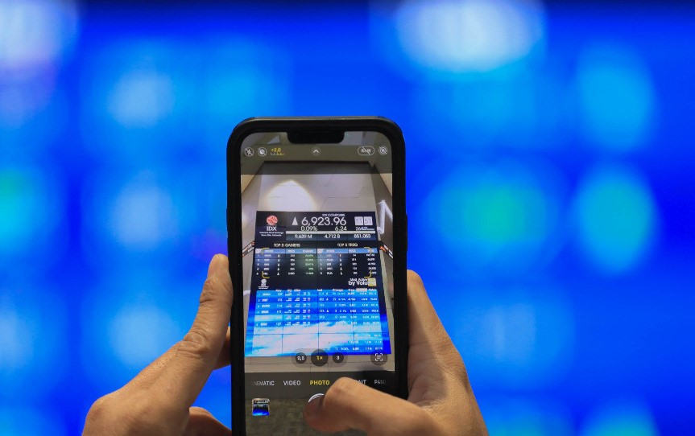

Tahap Pemilihan Umum (Pemilu) 2024 akan memasuki masa pendaftaran calon presiden (capres) dan calon wakil presiden (cawapres) pada Kamis (19/10/2023).
Pengaruh momentum Pemilu 2024 pun dimaknai berbeda oleh beberapa analis Tanah Air, meski secara historis pasar modal Indonesia cenderung menguat menjelang tahun kontestasi politik.
Samuel Sekuritas, misalnya, yang menilai ketidakstabilan politik jelang gelaran Pemilu tahun depan akan menjadi katalis negatif bagi pergerakan Indeks Harga Saham Gabungn (IHSG).
Menurut Micro Strategist Samuel Sekuritas Lipnel Priyadi, kondisi ini pun diperburuk dengan keputusan Mahkamah Konstitusi yang mengabulkan gugatan syarat pendaftaran capres-cawapres berusia minimal 40 tahun atau berpengalaman sebagai kepala daerah baik di tingkat Provinsi maupun Kabupaten/Kota.
Keputusan ini dinilai tidak ideal bagi IHSG karena dapat membawa momen Pemilu 2024 mengarah ke situasi toss-up election, kondisi di mana seluruh calon sama-sama kuat dan berpotensi menang.
BACA JUGA
Berkaca pada kondisi tersebut, Samuel Sekuritas merekomendasikan agar investor dapat mempertahankan posisi overweight pada sektor energi, infrastruktur, telekomunikasi, kesehatan, konsumer, hingga industri tembakau.
Di sisi lain, Senior Investment Information Mirae Asset Sekuritas Martha Christina justru memprediksi momentum Pemilu 2024 tidak akan berpengaruh signifikan pada Pasar Modal domestik.
Menurutnya, selama kondisi perekonomian RI terus stabil, maka pelaksanaan Pemilu 2024 tak akan terlalu memberi pengaruh yang besar terhadap kinerja Pasar Modal RI.
Namun demikian, Martha tak memungkiri bahwa momen Pemilu 2024 memang berpeluang membawa dampak positif bagi beberapa sektor tertentu, contohnya saja sektor konsumer.
“Tapi memang ada beberapa yang diuntungkan seperti sektor konsumer karena erat kaitannya kalau mau Pemilu biasanya ada bagi-bagi sembako. Kemudian juga ada saham dari sektor ritel,” ujarnya dikutip Rabu (18/10/2023).